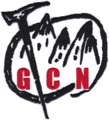

楽しい山行のために技術と知識を身につけれます
You can achive technics and knowledge for pleasant Mountaineering.

なにわ岳友クラブ(GCN)では会員を募集しています。
We Naniwa gakuyu club also welcome foreign citizenship who lives in Kansai region for climing with us.
アルパインクライミングに興味がある方、入会時の技術、経験は求めていません。
高みを目指す意思（やる気）を大切にしています。
我々と高みを求めて一歩を踏み出してみませんか。
やる気さえありましたら初心者の方も大歓迎です。
Techinics and experiences are not mandatory to admit our club.
The most important thing is motivation to aim high.
Will you step forward to aim high with us.
アルパインスタイルに興味はあるけれど、ハードルが高いのではないかと不安を抱かれる方のために
縦走部で山の基本訓練等を実施してから、登攀部に移行することも可能です。
安全登山の基本を徹底的に身につけてもらいます。
体験訓練や集会にご参加していただくことも可能です。
当会に興味のある方は、メールにてご連絡ください。
クライミングには初心者の方も『入門』から指導いたします。
応募条件
- クライミングに興味を持っている方で健康な方。
- 経験の有無は問いません。初心者の方も『入門』から指導します。
- １８歳以上５５歳以下(５５歳を超える方はお問い合わせください)
会費
| 入会金 | ￥８,０００ | |
| 年会費 | 一般会員 | ￥６，０００ |
| 学生会員 | ￥４，０００ | |
| 夫婦会員(２人) | ￥１０，０００ | |
| 休会員 | ￥２，０００ |
いずれも、別途、山岳保険には入っていただきます。
個人情報
「なにわ岳友クラブ」は、「お問い合わせメール」に記入された貴方の「個人情報」を第三者に開示若しくは提供は一切しません。
会のこと、入会について、ゲレンデ訓練体験などのお問い合わせはメールにてご連絡ください！！